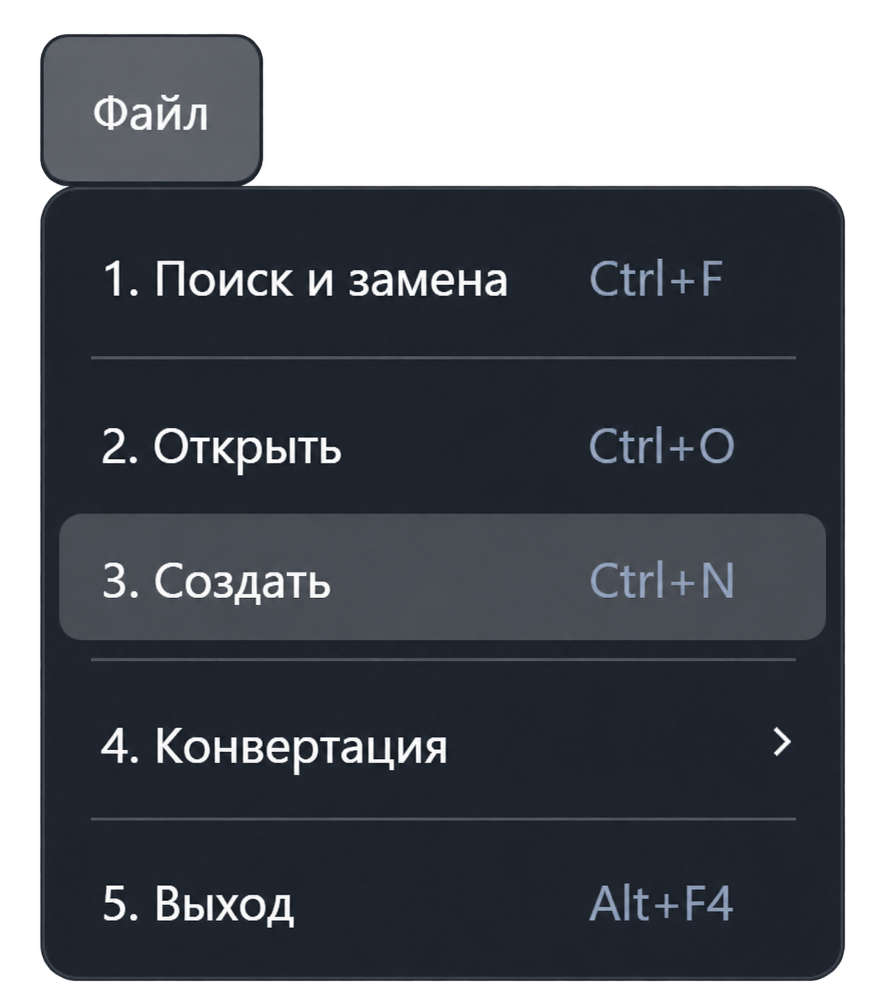

Функция "Создать"
Данной функцией можно создать новый текстовый файл
Путь и вызов
- Нахождение в программе
- Верхнее меню → "Файл" → "Создать"
- Горячие клавиши
- Ctrl + N
На изображении показано нахождение данной функции в программе:

Действия после нажатия
После нажатия горячих клавиш или ЛКМ по кнопке "Создать" открывается текстовый редактор (рисунок 2).